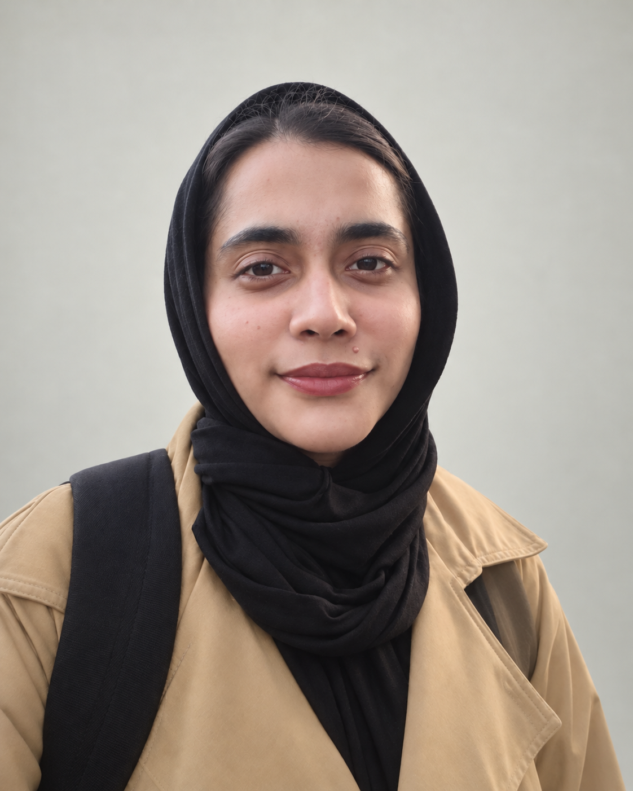

A student. A learner. A work in progress.
Curious mind.
Thoughtful code.
Hello, I’m Minahil Ilyas. A second-year Information Technology student exploring how good code can make everyday experiences better.
Explore my interestsLearning at the University of Hertfordshire

- 01 / Studying
- Information Technology
- 02 / University
- University of Hertfordshire
- 03 / Year of study
- Year 2
A little about me
The person
behind the code.
I’m interested in the space where technology meets the people who use it.
My studies bring together Java, HTML and CSS, and JavaScript fundamentals such as functions, operators, loops and the DOM. I’m learning how these building blocks become clear, useful digital experiences.
I’m also exploring semantic HTML, ARIA and accessibility APIs. Thinking about how different people use a website helps me approach both its structure and its behaviour more thoughtfully.
I’m looking for a placement where I can put these foundations into practice, learn from an experienced team and keep asking better questions.
Following my curiosity